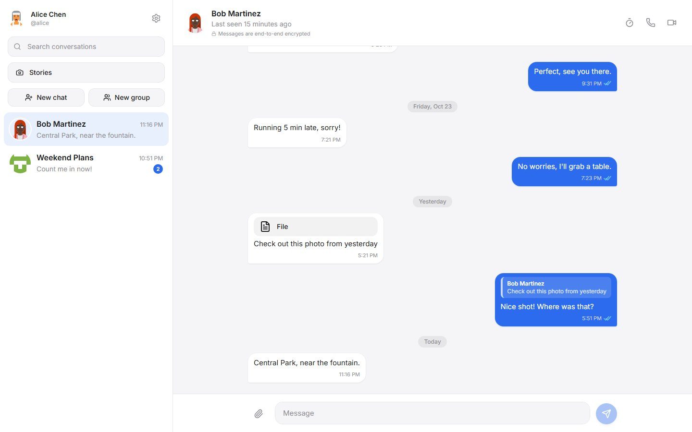
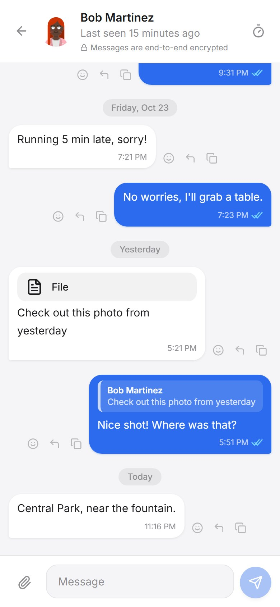

Full-stack web app
Signal Clone
A Signal-style messenger with real-time one-to-one and group chat.
- Read receipts, typing indicators, reactions, replies, attachments and disappearing messages over WebSockets.
- JWT sessions shared by the REST API and the WebSocket connection; an 8-table SQLModel schema.
- pytest, Vitest and Playwright tests run in GitHub Actions. Frontend on Vercel, API on Render.
- Next.js
- TypeScript
- FastAPI
- SQLModel
- WebSockets
The API runs on a free plan, so the first load after a quiet period can take up to 30 seconds.